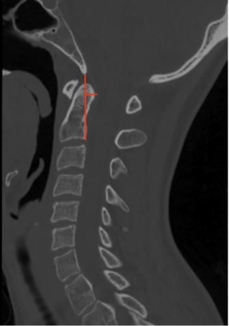

Adapted from: Thibodeau R, Normal CT cervical spine. Case study, Radiopaedia.org (Accessed on 28 Dec 2025) https://doi.org/10.53347/rID-183532
1) Description of Measurement
The Grabb–Oakes measurement, also referred to as the pB–C2 line, quantifies the degree of ventral brainstem compression at the craniovertebral junction. It measures the perpendicular distance from the posterior surface of the odontoid or ventral soft tissue mass to a reference line drawn between the basion and the posteroinferior aspect of the C2 vertebral body.
This measurement is especially useful in identifying clinically significant basilar invagination, retro-odontoid pseudotumor, pannus formation, and craniocervical instability, all of which may produce deformative ventral compression of the cervicomedullary junction.
2) Instructions to Measure
3) Normal vs. Pathologic Ranges
Key points:
4) Important References
Grabb PA, Mapstone TB, Oakes WJ. Ventral brain stem compression in pediatric and young adult patients with Chiari I malformations. Neurosurgery. 1999 Mar;44(3):520-7; discussion 527-8. doi: 10.1097/00006123-199903000-00050.
Smoker WR. Craniovertebral junction: normal anatomy, craniometry, and congenital anomalies. Radiographics. 1994 Mar;14(2):255-77. doi: 10.1148/radiographics.14.2.8190952.
Menezes AH. Craniovertebral junction anomalies: diagnosis and management. Semin Pediatr Neurol. 1997 Sep;4(3):209-23. doi: 10.1016/s1071-9091(97)80038-1.
Martin JE, Bookland M, Moote D, Cebulla C. Standardized method for the measurement of Grabb's line and clival-canal angle. J Neurosurg Pediatr. 2017 Oct;20(4):352-356. doi: 10.3171/2017.5.PEDS17181.
5) Other info....
The Grabb–Oakes measurement should be evaluated together with:
Particularly useful in:
When pB–C2 is > 9 mm, MRI is recommended to assess:
Surgical realignment or decompression aimed at reducing this measurement has been associated with improvement in neurologic symptoms in appropriately selected patients.